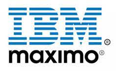

My name is John Cosper and I have been an IBM Maximo professional for 14 years. My site provides technical training in system administration and development of IBM Maximo.
Training for IBM Maximo is expensive. Moreover, it is hard to learn advanced concepts related to IBM Maximo because training only covers entry level concepts. My purpose is to create training activities to help online learners advance knowledge towards intermediate and advanced activities often outsourced to expensive Maximo consulting companies. One of the most important things one can do with an expensive enterprise application such as IBM Maximo is to install it according to best practices. I teach how to install IBM Maximo in a clustered environment. I teach how to patch and keep IBM Maximo healthy and upgradeable. Following best practices makes upgrades affordable. Using the Maximo Integration Framework (MIF) is essential for integrating Maximo with other applications. I teach how to do this with external iface tables. Many who customize IBM Maximo break the out-of-box functionality by extending java classes. I teach how to customize Maximo using automation scripts. The best languages to use for Automation scripts are Python or Javascript.